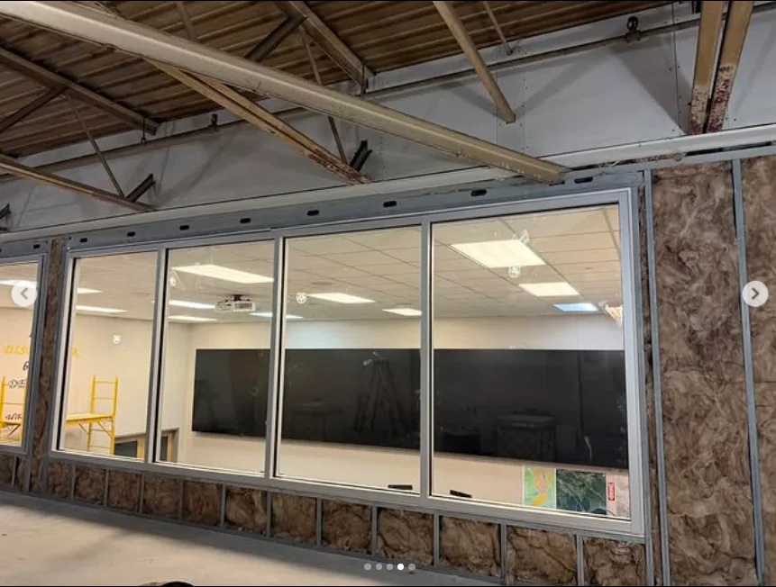

Precision
The opening, the glass, the hardware, and the surrounding surfaces deserve attention to the details people notice.

ABOUT MASTER GLASS SOLUTIONS
Master Glass Solutions is a commercial and residential glass installation and fabrication company serving Boerne, San Antonio, and nearby Hill Country communities from its San Antonio office. The work is built around precision, reliable service, and craftsmanship that belongs in the finished space.
OUR APPROACH
Good glass work does not need a loud introduction. Its value is visible in how it aligns with the architecture, supports daily use, and holds up as part of the property.
Master Glass Solutions approaches commercial and residential glass needs with more than 20 years of experience as a foundation. That means listening for the actual project need—whether it is a storefront, a shower enclosure, a custom feature, a window glass issue, or urgent broken glass—then helping the customer move toward the right next step.
WHAT THE NAME STANDS FOR
The opening, the glass, the hardware, and the surrounding surfaces deserve attention to the details people notice.
Customers need a team that understands the purpose of the work and respects the importance of a clear next step.
The result should serve the property, the people who use it, and the standard the customer wants to uphold.
THE TEAM
Glass work is hands-on. The people doing it matter as much as the process. Here's who brings Master Glass Solutions to life.
Linda & Adam — Owners & Founders
Linda and Adam founded Master Glass Solutions with a clear vision: bring precision craftsmanship and reliable service to every project. With combined decades of glass industry experience, they lead the company with the same attention to detail that defines every installation—from initial consultation through project completion.
Leadership focus: Company vision, project standards, precision glass work, customer relationships
Senior Glass Installers
The installation team brings combined 40+ years of glass and glazing experience. Every member is trained in frameless glass systems, commercial storefronts, emergency repair protocols, and customer service that reflects Master Glass Solutions' standard.
Specializations: Residential glass, commercial glazing systems, precision hardware installation, safety compliance
Project Coordination & Customer Service
This team member ensures every project runs smoothly—from scheduling to logistics to customer communication. Clear coordination and reliable follow-up make every job feel effortless from the customer's perspective.
Specializations: Project scheduling, quote management, customer communication, emergency response coordination
LOCAL HOME BASE
Boerne is a priority service area, not a separate published office address.
Get directions & contact detailsLOCAL AUTHORITY
Local relevance should be earned with specific, useful service information—not a long list of unverified city names. This site keeps the service-area focus clear and builds dedicated, helpful pages around confirmed locations.
Explore service areasMaster Glass Solutions is located at 4949 N Loop 1604 West, Suite 501, San Antonio, TX 78249.
The current service-area focus is Boerne and San Antonio, Texas. Contact the team with the property location to discuss a specific project.
Master Glass Solutions states more than 20 years of experience in commercial and residential glass installation and fabrication.
MASTER GLASS SOLUTIONS
Tell us what you’re planning, repairing, or replacing. We’ll help you identify the right path.